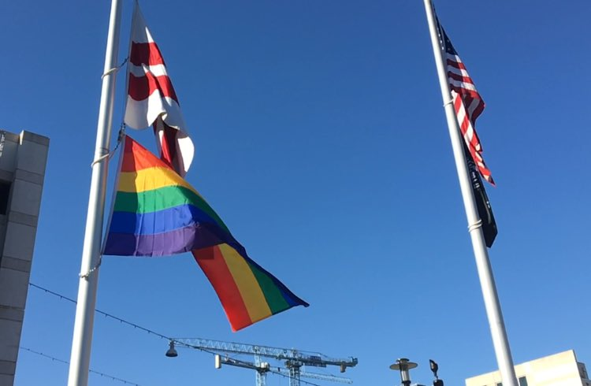

About the Project
Over 10,000 Tweets were scraped using the Twitter API and the Python Scrapy library. We focused on a period before and after each team's Pride Night event. This translated to a 4-week window for most teams, but the window was extended for certain low-activity teams, in order to collect enough activity to analyze.
The survey was distributed via MLB-generic Facebook groups, sub-Reddits, and via Twitter. We avoided team-specific groups, so as to not skew the results.
Data cleaning and normalizing was done using Python, Pandas and Numpy. The sentiment analysis was performed with Vader, Scikit-learn, and NLTK libraries.
Visualizations were created in Tableau, Flourish, and WordCloud.
